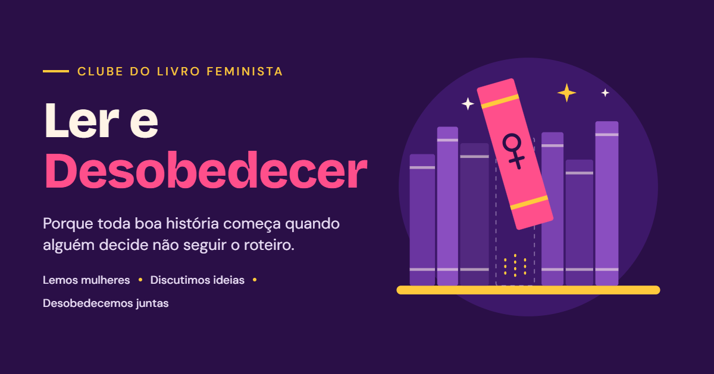

Para quem deseja ler mais, pensar mais e desobedecer o que precisa ser desobedecido, seja você leitora de longa data ou alguém que ainda está começando.
Público-alvo

- Leitoras de longa data
- Quem está começando a ler
- Quem gosta de pensar e questionar